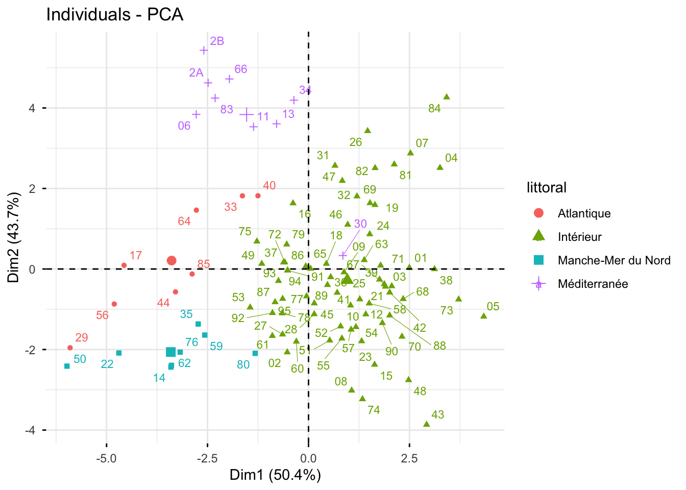

library(mclust)
library(cluster)
library(factoextra)
library(FactoMineR)
library(dbscan)
library(seriation)
library(ggplot2)
library(reshape2)
library(ggalluvial)
library(leaflet)
library(sf)
library(dplyr)
library(gridExtra)TP 2 - DBSCAN
Sujet
L’objectif de ce TP est d’illustrer les notions abordées pour la méthode DBSCAN, d’abord sur des données simulées en dimension 2 (pour lesquelles on peut visualiser directement les résultats), puis sur les données de températures des départements étudiées dans le TP 1. Les librairies R nécessaires pour ce TP :
1 Clustering sur données simulées
1.1 Présentation des données
Dans cette première partie, on considère les données simulées chameleon_ds7 disponibles dans la librairie seriation. Ce jeu de données contient \(n=10\,000\) points du plan (\(p=2\) variables x et y), répartis en plusieurs groupes de formes variées, auxquels s’ajoute du bruit uniforme.
Question : Chargez les données et représentez-les. Combien de groupes distinguez-vous visuellement ? Quelles sont leurs formes ?
library(seriation)
data(Chameleon)
# A COMPLETER1.2 DBSCAN à paramètres fixés
Question : Pour rappel, l’algorithme DBSCAN dépend de deux paramètres : un rayon eps et un nombre minimal de points minPts. Appliquez l’algorithme DBSCAN avec les paramètres minPts= 25 et eps= 13 à l’aide de la fonction dbscan() de la librairie dbscan. Quels sont les effectifs par classe ? Combien de points ne sont pas classés ? Représentez la classification obtenue.
# A COMPLETER
res.db <- dbscan::dbscan(...)
table(...)
ggplot(data.frame(chameleon_ds7, clust=as.factor(res.db$cluster)), aes(x=x, y=y, col=clust)) +
geom_point(size=0.5)Question : Identifiez les points centraux, les points frontière et les points de bruit. Vous pouvez utiliser la fonction is.corepoint() de la librairie dbscan. Représentez-les sur un graphique.
# A COMPLETER
central <- is.corepoint(chameleon_ds7, eps=13, minPts=25)
type <- ifelse(res.db$cluster==0, "bruit", ifelse(central, "central", "frontiere"))
table(type)
ggplot(data.frame(chameleon_ds7, type=type), aes(x=x, y=y, col=type)) +
geom_point(size=0.5) +
scale_color_manual(values=c(bruit="grey", frontiere="orange", central="blue"))1.3 Influence des paramètres de DBSCAN
Question : Appliquez DBSCAN avec les couples de paramètres (minPts, eps) suivants : (5, 5), (25, 10), (25, 13) et (25, 20). Représentez les classifications obtenues et commentez.
# A COMPLETER
param <- list(c(5,5), c(25,10), c(25,13), c(25,20))
...Question : Pour étudier plus systématiquement l’influence des paramètres minPts et eps, évaluez le nombre de classes obtenues et le pourcentage de points non classés pour une grille de valeurs de ces paramètres.
minPts <- ...
eps <- ...
NBCluster <- matrix(0, nrow=length(minPts), ncol=length(eps))
NBNonCl <- matrix(0, nrow=length(minPts), ncol=length(eps))
for (i in 1:length(minPts)){
for (j in 1:length(eps)){
res <- dbscan::dbscan(chameleon_ds7, eps=eps[j], minPts=minPts[i])
NBCluster[i,j] <- ...
NBNonCl[i,j] <- ...
}
}
df <- data.frame(eps=rep(eps,each=length(minPts)),
minPts=as.factor(rep(minPts,length(eps))),
NBCluster=c(NBCluster),
NBNonCl=c(NBNonCl)*100/nrow(chameleon_ds7))
ggplot(df,aes(x=eps,y=NBCluster,col=minPts))+
geom_point()+geom_line()+
geom_hline(yintercept=9, lty=2)+
scale_y_log10()+ylab("Nombre de classes (échelle log)")
ggplot(df,aes(x=eps,y=NBNonCl,col=minPts))+
geom_point()+geom_line()+ylab("Pourcentage de points non classés")Question : Pour une valeur de minPts=25, tracez le graphe des distances au \(k\)-ème plus proche voisin afin de choisir le paramètre eps. Vous pouvez utiliser la fonction kNNdistplot().
# A COMPLETER1.4 Comparaison avec les Kmeans
Question : Appliquez l’algorithme des Kmeans sur ces données \(K=9\) classes et comparez-la avec celle obtenue par DBSCAN. Retrouvez les grandes caractéristiques de ces deux méthodes.
# A COMPLETER2 Clustering des départements selon leur climat par DBSCAN
Dans cette seconde partie, on applique DBSCAN à des données réelles en plus grande dimension.
2.1 Reprise des données
On reprend dans ce TP le jeu de données TemperaturesDepartements2018-2024.csv (disponible sur la page moodle du cours) décrit et étudié dans le TP 1. Pour rappel, chacun des \(n=96\) départements de France métropolitaine est décrit par 9 indicateurs climatiques calculés sur les années 2018 à 2024 (t_annuelle, t_hiver, tmin_hiver, j_gel, t_ete, tmax_ete, j_chaud, ampl_annuelle, ampl_jour) et par les variables qualitatives departement, region, littoral et massif.
On charge les données et on centre-réduit les variables quantitatives.
temp <- read.table("TemperaturesDepartements2018-2024.csv", header=T, encoding = "UTF-8")
rownames(temp) <- temp$code_dep
temp <- temp[,-1]
temp$region <- as.factor(temp$region)
temp$littoral <- as.factor(temp$littoral)
temp$massif <- as.factor(temp$massif)
quanti <- 5:13
tempinit <- temp
temp[,quanti] <- scale(temp[,quanti], center=T, scale=T)
Xtemp <- temp[,quanti]
head(tempinit) departement region littoral massif
01 Ain Auvergne-Rhône-Alpes Intérieur Non
02 Aisne Hauts-de-France Intérieur Non
03 Allier Auvergne-Rhône-Alpes Intérieur Non
04 Alpes-de-Haute-Provence Provence-Alpes-Côte d'Azur Intérieur Oui
05 Hautes-Alpes Provence-Alpes-Côte d'Azur Intérieur Oui
06 Alpes-Maritimes Provence-Alpes-Côte d'Azur Méditerranée Oui
t_annuelle t_hiver tmin_hiver j_gel t_ete tmax_ete j_chaud ampl_annuelle
01 12.95 5.04 1.36 55.1 21.36 28.22 39.0 18.05
02 11.76 5.27 2.58 35.3 18.77 24.61 11.3 15.00
03 12.78 5.58 1.48 57.1 20.54 27.51 35.0 16.56
04 14.29 6.43 1.46 37.7 23.32 30.62 61.1 18.89
05 12.13 3.86 -1.26 80.6 21.00 28.27 36.3 19.23
06 16.99 10.55 6.95 0.0 24.35 27.71 18.1 15.56
ampl_jour
01 10.73
02 8.77
03 11.50
04 12.04
05 12.14
06 6.92On refait l’ACP pour la visualisation des résultats dans la suite.
resacp <- PCA(temp[,-1], quali.sup=1:3, scale.unit = TRUE, graph=FALSE)
fviz_pca_ind(resacp, geom=c("point","text"), labelsize=3, habillage=2, repel=T)
2.2 Fonctions auxiliaires
Vous pourrez visualiser les clusterings obtenus sur la carte de France à l’aide de la fonction visualclust() suivante (le fichier Depart.geojson est disponible sur moodle). Par rapport à la version du TP 1, on a ajouté l’argument bruit qui permet de représenter en gris les individus non classés par DBSCAN (codés 0 dans $cluster).
# fonction auxiliaire pour représentation géographique
# varquali : variable qualitative (par exemple une classification), couleur par modalité
# codes : codes des départements correspondant à varquali (par défaut les noms de varquali)
# bruit : modalité correspondant aux points non classés (représentée en gris),
# "0" pour une sortie de DBSCAN, NULL sinon
# Les classes sont associées aux polygones par une jointure sur le code du département
# (l'ordre des départements dans le fichier geojson n'est pas le même que dans les données)
departements_geojson <- st_read("Depart.geojson", quiet = TRUE)
visualclust <- function(departements_geojson, varquali, codes = names(varquali), bruit = NULL){
if (is.null(codes)) stop("Préciser les codes des départements avec l'argument codes")
varquali <- as.factor(varquali)
df <- departements_geojson %>%
left_join(data.frame(code = as.character(codes), classification = varquali),
by = "code")
# Définir des couleurs (une par modalité, gris pour le bruit éventuel)
couleurs <- topo.colors(nlevels(varquali))
names(couleurs) <- levels(varquali)
if (!is.null(bruit) && (bruit %in% levels(varquali))){
autres <- setdiff(levels(varquali), bruit)
couleurs[autres] <- topo.colors(length(autres))
couleurs[bruit] <- "grey"
}
pal <- colorFactor(couleurs, levels(varquali))
# Créer la carte Leaflet
# pas de fond de carte OpenStreetMap (addTiles()), bloqué hors d'un site web
gcarte <- leaflet(df) %>%
addPolygons(
fillColor = ~pal(classification), # Couleur en fonction de la classification
weight = 1,
opacity = 1,
color = "black",
dashArray = "3",
fillOpacity = 0.7,
popup = ~paste("Département : ", nom, "<br>Classification : ", classification)
) %>%
addLegend(
pal = pal,
values = ~classification,
title = "Classification",
opacity = 1
)
return(gcarte)
}Vous pourrez comparer deux clusterings à l’aide d’un graphique alluvial en utilisant la fonction alluvtwoclust() suivante :
alluvtwoclust <- function(classif1, classif2, nom1, nom2){
clust1 <- paste0(nom1,"-k",classif1)
clust2 <- paste0(nom2,"-k",classif2)
Tab <- melt(table(clust1,clust2))
g <- ggplot(Tab,aes(y=value,axis1=clust1,axis2=clust2))+
geom_alluvium(aes(fill=clust1))+
geom_stratum(width = 1/12)+
geom_text(stat = "stratum", aes(label = after_stat(stratum)))+
theme(legend.position = "none")
return(g)
}2.3 Clustering par DBSCAN
Question : Mettez en place un clustering des données températures par la méthode DBSCAN et analysez la classification obtenue.
# A COMPLETER